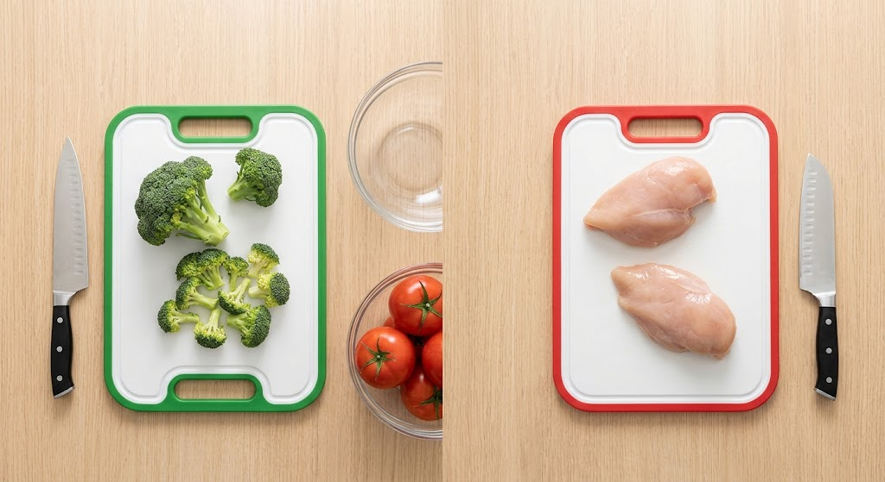
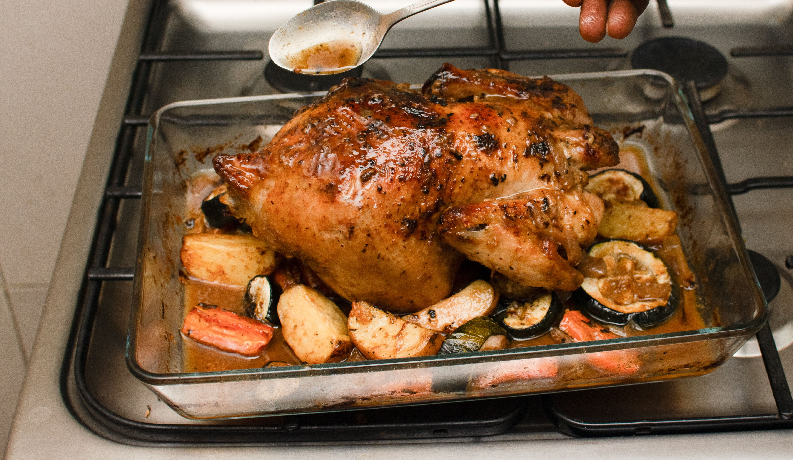
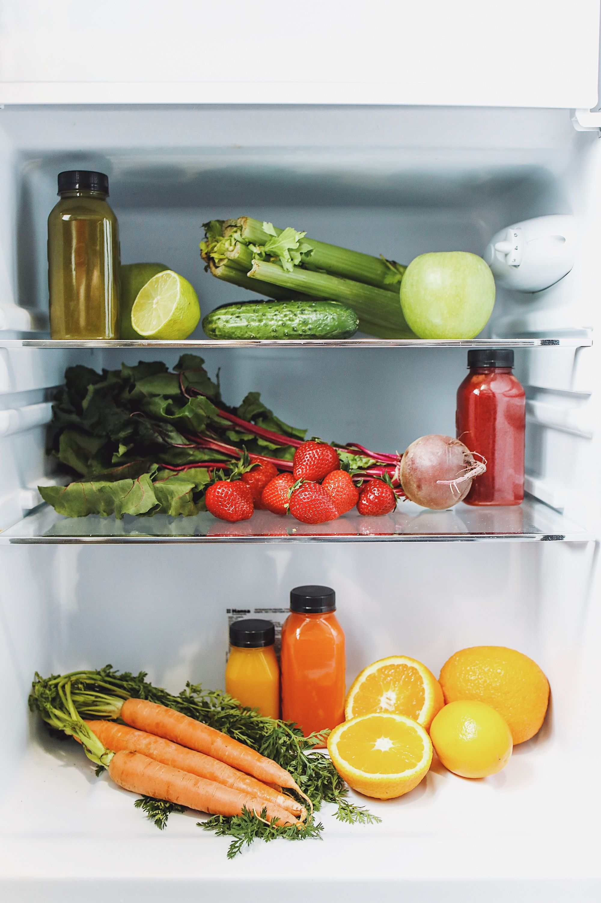
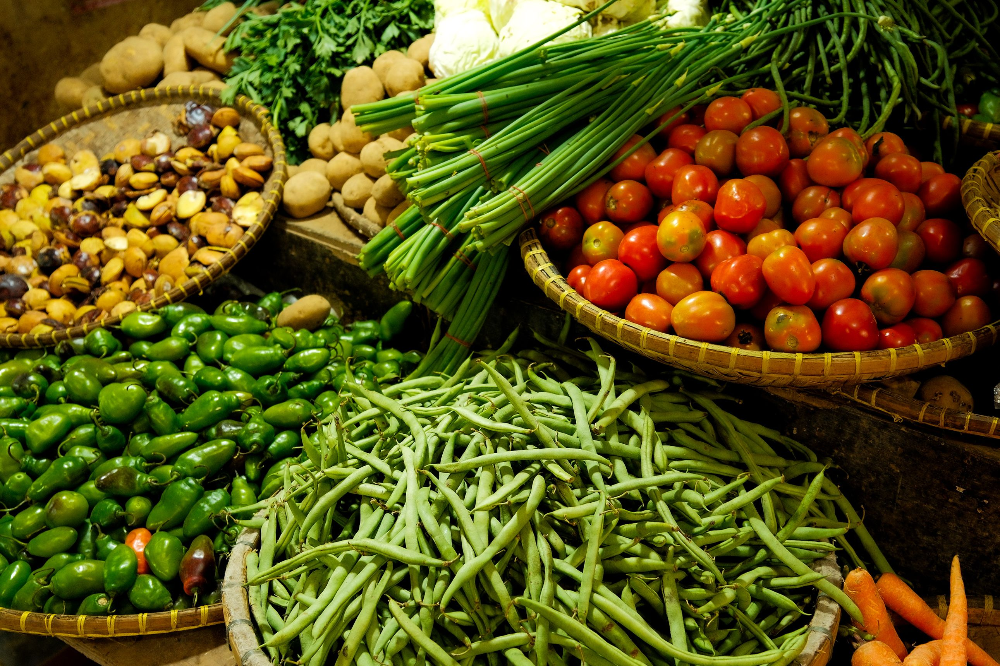
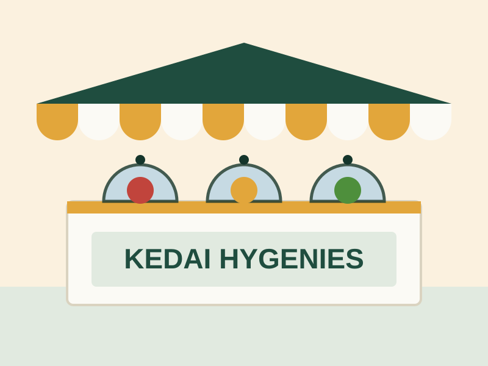

Kebersihan dan keamanan pangan, dari tangan sampai etalase
Tujuh bagian berikut menjelaskan langkah-langkah nyata yang bisa langsung Anda terapkan di warung, toko kelontong, atau usaha makanan kecil — beserta checklist yang bisa dipakai setiap hari.
Bagian 1
Kebersihan diri dan peralatan
Sebagian besar bakteri berbahaya berpindah ke makanan lewat tangan dan peralatan yang tidak bersih. Langkah ini paling murah untuk dilakukan, tapi paling sering terlewat saat toko sedang ramai.
Cuci tangan pakai sabun sebelum mulai mengolah makanan, setelah memegang uang, sampah, hewan, atau setelah dari toilet.
Gunakan sarung tangan plastik sekali pakai saat sedang flu, diare, atau ada luka di tangan.
Cuci talenan, pisau, dan wadah dengan air sabun panas setiap selesai dipakai — jangan tunggu sampai menumpuk.
Jaga area dapur dan gudang tetap bersih dari sisa makanan agar tidak mengundang tikus, kecoa, atau serangga.
Ganti lap dan spons secara rutin — kain basah yang dipakai berulang adalah sarang bakteri.
Bagian 2
Mencegah kontaminasi silang
Kontaminasi silang terjadi saat bakteri dari bahan mentah berpindah ke makanan yang sudah matang atau siap makan — biasanya lewat talenan, tangan, atau wadah yang sama.
Pisahkan daging, ayam, dan makanan laut mentah dari sayur, buah, dan makanan matang — baik di rak jual maupun di kulkas.
Idealnya, gunakan talenan dan pisau terpisah untuk bahan mentah dan bahan siap saji.
Jangan pernah meletakkan makanan matang di piring atau wadah bekas bahan mentah tanpa dicuci dulu.
Simpan bahan mentah di rak paling bawah kulkas agar cairannya tidak menetes ke makanan lain.
Tahukah Anda?
Mencuci daging ayam atau daging sapi mentah di bawah air keran justru berisiko — percikan airnya bisa menyebarkan bakteri ke wastafel dan permukaan sekitar. Memasak dengan suhu yang tepat jauh lebih efektif membunuh bakteri dibanding mencucinya.

Bagian 3
Suhu memasak yang tepat
Memasak sampai suhu tertentu adalah cara paling efektif membunuh bakteri berbahaya seperti Salmonella dan E. coli. Kalau punya termometer makanan, gunakan — kalau tidak, patokan tanda kematangan di bawah ini bisa membantu.

Jenis bahan makanan
Suhu minimal
Tanda matang
Daging sapi, kambing, atau babi (potongan utuh)
62°C
Diamkan 3 menit setelah dimasak sebelum dipotong
Daging giling (sapi, ayam, babi)
71°C
Tidak ada bagian yang masih merah muda
Ayam, bebek, dan unggas lain
71°C
Bagian dalam tidak lagi pink, cairan bening
Ikan bersirip
62°C
Daging berubah warna dan mudah dipisah dengan garpu
Sup, kuah, dan makanan berkuah
70°C
Mendidih rata, dipanaskan cukup lama
Saat menghangatkan makanan dengan microwave atau kompor, pastikan seluruh bagian makanan panas merata, bukan hanya di permukaan.
Bagian 4
Penyimpanan dan pencairan yang aman
Bakteri berkembang biak paling cepat pada suhu antara 4°C dan 60°C — sering disebut “zona bahaya”. Semakin lama makanan berada di rentang suhu ini, semakin besar risikonya.
Jangan biarkan makanan matang berada di suhu ruang lebih dari 2 jam (atau 1 jam jika suhu ruang di atas 32°C).
Simpan makanan matang atau bahan segar di kulkas dengan suhu di bawah 5°C.
Jika makanan disajikan panas, jaga tetap di atas 60°C selama dipajang.
Beri label tanggal pada stok di kulkas dan gudang, dan terapkan prinsip barang lama keluar lebih dulu (FIFO).
Cairkan bahan beku di dalam kulkas, bukan di suhu ruang — kalau butuh cepat, rendam dalam air dingin mengalir atau gunakan microwave.

Zona bahaya suhu makanan
4°C – 60°C adalah rentang suhu tempat bakteri tumbuh paling cepat. Usahakan makanan matang tidak berlama-lama di rentang ini — segera dinginkan atau jaga tetap panas.
Bagian 5
Air bersih dan bahan baku
Kualitas produk jadi ditentukan sejak bahan bakunya masuk ke toko. Sumber yang baik memudahkan seluruh langkah kebersihan berikutnya.
Gunakan air bersih dan layak minum untuk mencuci bahan makanan dan peralatan.
Pilih bahan baku segar dari pemasok terpercaya, dan periksa kemasan tidak rusak atau bocor.
Pastikan produk olahan seperti susu dan santan kemasan sudah melalui proses pasteurisasi.
Cuci buah dan sayur di bawah air mengalir, termasuk yang akan dikupas, sebelum diolah atau dijual.
Jangan menjual atau menggunakan bahan yang sudah melewati tanggal kedaluwarsa.

Bagian 6
Sistem HACCP sederhana untuk warung dan toko

Ganti dengan foto kedai Anda sendiri di images/stall.svg
HACCP (Hazard Analysis Critical Control Point) adalah sistem yang dipakai usaha makanan di banyak negara untuk mengenali titik-titik yang paling berisiko dalam proses mereka, lalu memantaunya secara rutin. Skalanya bisa disederhanakan sesuai ukuran usaha — warung kecil tidak perlu dokumen setebal restoran besar, tapi prinsipnya tetap bisa dipakai.
Kenali tahapan usaha Anda. Tuliskan alur singkat: belanja bahan → penyimpanan → pengolahan → penyajian → penjualan.
Tandai titik paling berisiko. Biasanya di penyimpanan bahan mentah, suhu memasak, dan lama makanan dipajang.
Tentukan batas amannya. Misalnya suhu kulkas, suhu memasak minimal, dan batas waktu penyajian yang sudah dijelaskan di bagian sebelumnya.
Pantau secara rutin. Cek suhu kulkas dan kondisi bahan setiap buka dan tutup toko.
Catat hasil pemantauan. Buku catatan sederhana atau checklist harian sudah cukup — ini juga jadi bukti kalau ada pemeriksaan dari petugas kesehatan setempat.
Siapkan tindakan koreksi. Misalnya, jika suhu kulkas naik, pindahkan stok ke kulkas lain dan cari tahu penyebabnya.
Evaluasi berkala. Tinjau kembali catatan setiap bulan untuk melihat pola masalah yang berulang.
Soal izin dan sertifikasi
Ketentuan resmi soal keamanan pangan dan sertifikasi usaha bisa berbeda tergantung skala dan jenis usaha Anda. Untuk kepastian aturan yang berlaku, sebaiknya hubungi Dinas Kesehatan atau kantor BPOM di wilayah Anda.
Bagian 7
Checklist harian sederhana
Centang setiap item saat buka dan tutup toko. Centangan tersimpan di perangkat ini untuk hari ini, dan otomatis kosong lagi besok.
Cetak dan tempel di warung Anda
Cetak daftar ini agar mudah dicek setiap hari oleh siapa pun yang bertugas.